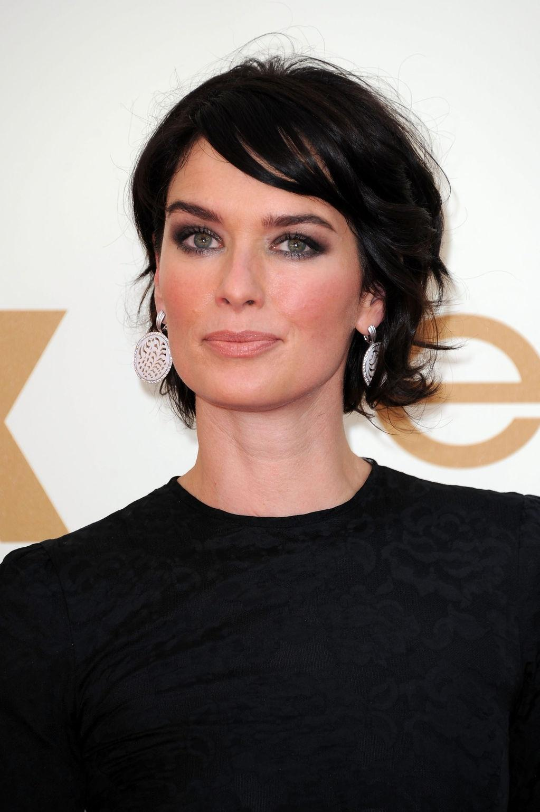

Kit Horington
Christopher Catesby Harington, dit Kit Harington, est un acteur britannique,
né le 26 décembre 1986 à Acton (Londres).
Inconnu du milieu cinématographique, il obtient une reconnaissance critique et mondiale pour son rôle culte de Jon Snow dans la série
télévisée américaine Game of Thrones (2011-2019) avant de se consacrer pleinement au cinéma avec Ma vie avec
John F. Donovan de Xavier Dolan qui signe son premier grand rôle sur grand écran.
Emilia Clarke
Emilia Clarke est une actrice britannique, née le 23 octobre 19863,4,5 à Londres.
Après avoir eu un cursus professionnel de théâtre et de cinéma au sein de la Drama Centre London.
Son premier rôle est dans le prime time serial Doctors, en 2009.
Elle joue ensuite dans un film fantastique produit pour la télévision Triassic Attack diffusé sur le réseau télévisé.
L'actrice continue son ascension avec la série télévisée fantastique médiévale Game of Thrones (2011-2019)
où elle interprète la protagoniste du show Daenerys Targaryen. Elle atteint le sommet de la célébrité grâce au succès mondial
de la série et remporte en 2018 le Britannia Awards dans la catégorie actrice de l’année9.
Parallèlement, elle tient les premiers rôles féminins de deux blockbusters attendus :
incarnant Sarah Connor dans le reboot Terminator Genisys (2015) et Qi'Ra dans le film dérivé Solo: A Star Wars Story (2018).
Mais les deux longs métrages sont mal reçus par la critique10 et le public11,12, leurs producteurs mettent fin à tout projet de suite
Nikolaj Coster
Nikolaj Coster-Waldau , né le 27 juillet 1970 à Rudkøbing, est un acteur danois.
Il est connu pour son rôle de Jaime Lannister dans la série télévisée Game of Thrones.
Lena Headey

Lena Headey , est une actrice britannique, née le 3 octobre 1973 à Hamilton (Bermudes).
Elle se fait connaître par le rôle de Sarah Connor dans la série de science-fiction Terminator : Les Chroniques de Sarah Connor (2008-2009)
mais elle accède surtout à la notoriété par le rôle de Cersei Lannister dans la série de fantasy médiévale Game of Thrones (2011-2019).